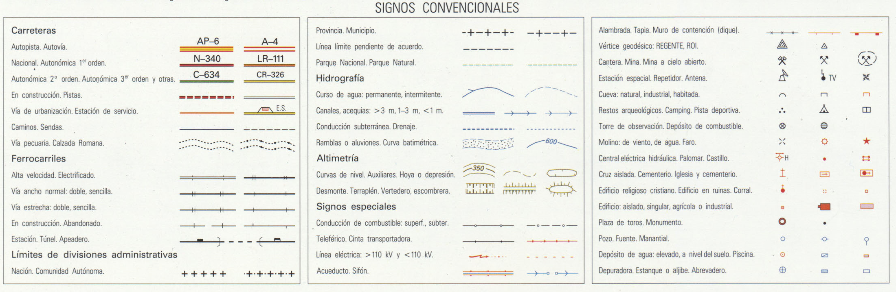

Leyenda temática
Se refiere a la simbología utilizada para representar las características temáticas del territorio representado.
Su fin es descodificar y hacer comprensible el contenido del mapa
Las leyendas tienen superficies que muestran ejemplos de los símbolos del mapa.

Leyenda de signos convencionales
Es otra leyenda, pero que se encarga de describir la simbología empleada para los elementos topográficos del mapa:

Por ejemplo, los usos de suelo